Este roteiro é construído em cinco etapas. Cada uma desbloqueia a próxima. Aqui vocês acompanham onde estamos e o que vem por aí.
Conversamos sobre sonhos, ritmo de viagem e gostos pessoais de vocês. Juntos definimos as três cidades: Dallas, Miami e Orlando. A partir daqui é planejar e carimbar os 🇺🇸
Concluído · 13/04/2026 às 20h30Nesta etapa entregamos opções de voo selecionadas por custo-benefício, horários e logística de conexão (saindo de Campo Grande). Vocês comparam, escolhem a que faz mais sentido e compram as passagens.
Concluído · Jun/2026Com os voos definidos, apresentamos 3 opções de hotel por cidade (9 no total) organizadas por perfil — econômico, custo-benefício e premium. Vocês analisaram, escolheram e reservaram direto pela plataforma que preferiram.
Concluído · 24/07/2026Com voos e hospedagem confirmados, finalizamos o roteiro completo: todos os dias com atrações, restaurantes, transfers, horários e dicas — do voo de ida ao voo de volta. É a versão final que vocês vão usar durante a viagem. Previsão de entrega: 30 dias após voos e hospedagens confirmados e pagamento final do valor contratado do roteiro.
Estamos aquiCom o roteiro completo aprovado por vocês, entramos na reta final: checklist e suporte na reserva dos passeios que precisam ser comprados com antecedência, entrega do Google Maps personalizado com todos os pontos da viagem já marcados, uma reunião final para tirar todas as dúvidas antes de embarcar — e suporte contínuo até a data da viagem.
Última etapaRoteiros bons se constroem com decisões boas. Esperar os voos pra indicar hotel, e esperar o hotel pra montar o dia a dia, garante que cada recomendação esteja perfeitamente alinhada com as datas, o aeroporto de chegada e o ritmo real da viagem. Cada etapa fica pronta, certa e definitiva.
Atualizamos este checklist conforme avançamos nas etapas da viagem. Os itens marcados já estão resolvidos — os abertos são os próximos passos.
Tudo que precisa ser comprado ou reservado com antecedência — ingressos, Lightning Lane e mesas em restaurantes concorridos. O que pode ser decidido na hora fica só no roteiro do dia correspondente.
A viagem começa de fato na segunda de manhã, com o voo curto de Campo Grande até São Paulo. Como o voo internacional só sai na terça à noite, sobra uma noite inteira e quase um dia todo em Guarulhos — tempo de sobra pra descansar, arrumar as malas com calma e chegar tranquilos pro embarque mais longo da viagem: as 10h20 direto até Dallas.
O primeiro trecho é rápido e tranquilo — só 1h40 de voo direto até Guarulhos, ainda em horário de check-in doméstico, sem a pressa e a burocracia do embarque internacional que vem depois. É o momento de respirar fundo: a viagem está começando de verdade.
Duas opções de hotel perto do aeroporto de Guarulhos já estão na curadoria de hospedagens, aguardando a escolha de vocês — ambas com transfer gratuito até o terminal, pensadas pra chegar descansados no embarque internacional da noite seguinte, sem correria de última hora.
Com check-out flexível e o voo só à noite, esse período é pensado pra ser tranquilo, não pra sair explorando São Paulo — Guarulhos fica longe do centro, e o risco de imprevisto no trânsito não vale a pena véspera de um voo internacional de 10h20. O ideal é aproveitar a estrutura do hotel, terminar de organizar as malas com calma e guardar energia: a próxima "parada de verdade" já é o Texas.
O grande trecho da viagem: 10h20 direto até Dallas, embarcando já de noite e pousando na manhã seguinte, horário do Texas. É um voo longo, então vale se preparar — roupas confortáveis, uma manta ou casaquinho leve (o ar-condicionado da cabine costuma ser gelado), fones de ouvido e algo pra entreter durante as horas de voo. Além do jantar servido a bordo, uma bebida ou lanche antes de embarcar ajuda a começar o voo mais tranquilo.
Dallas é a porta de entrada de vocês nos Estados Unidos — parte da "Metroplex", a quarta maior região metropolitana do país, formada junto com a vizinha Fort Worth. Arranha-céus de vidro, chapéu de cowboy, churrasco lento e uma história que passa por petróleo, algodão e um dos capítulos mais marcantes do século XX. É aqui que a viagem de vocês começa a valer o carimbo.
Depois de mais de 15 horas entre o voo internacional e a conexão em São Paulo, hoje é dia de pisar no Texas pela primeira vez. A manhã é só logística — imigração, bagagem, retirada do carro alugado e um café da manhã bem texano antes de sair explorando. Sem pressa, um mergulho leve no coração histórico de Dallas: as longhorns de bronze da Pioneer Plaza e a praça onde a história dos EUA mudou de rumo em Dealey Plaza, seguidos de almoço. À tarde, o check-in no hotel em Las Colinas, e no fim do dia o pôr do sol lá do alto da Reunion Tower. Fecha com chave de ouro num jantar clássico numa steakhouse texana — a primeira de muitas carnes boas desta viagem.
Depois do pouso, o processo segue a ordem clássica de qualquer chegada internacional aos EUA: fila da imigração, coleta de bagagem e, por fim, a retirada do carro alugado — tudo dentro do próprio terminal do DFW. Como o check-in do hotel só libera à tarde, as malas seguem no porta-malas por enquanto — é hora de sair pra explorar Dallas com o estômago vazio e a manhã inteira pela frente.
Dallas é uma cidade pensada pra carro, então estacionar costuma ser tranquilo. No Downtown (onde ficam Pioneer Plaza, Dealey Plaza e Reunion Tower), as vagas de rua são pagas por parquímetro ou aplicativo — cobradas em dias úteis, geralmente das 8h às 18h, e liberadas à noite e aos domingos. Há também garagens e estacionamentos pagos por hora ou diária espalhados pelo centro, bem sinalizados. Já em Las Colinas e nas áreas mais afastadas do centro — como restaurantes e shoppings — o estacionamento costuma ser gratuito, direto no local.
📍 Várias unidades entre o DFW e Las Colinas
Culinária: fast-food texano · ambiente informal, ideal pra uma parada rápida
💰 ~US$ 8–12 por pessoa
🅿️ Estacionamento próprio e gratuito, direto na porta
✅ Sem reserva

Inaugurada em 1994 pelo escultor texano Robert Summers, a Pioneer Plaza reúne 49 longhorns de bronze em tamanho real conduzidas por três cowboys montados — a maior escultura de bronze do mundo dedicada a um único tema. A cena recria as grandes boiadas do Shawnee Trail, rota usada nas décadas de 1860 e 1870 para levar gado do Texas até as ferrovias do Kansas, movimento que forjou boa parte da identidade texana que vocês vão sentir viagem afora. É possível caminhar entre as esculturas e tocar os chifres — a escala real dos animais é bem maior do que qualquer foto entrega. No fundo, o riacho artificial e os arranha-céus de Downtown criam um contraste curioso entre o Texas antigo e o moderno.
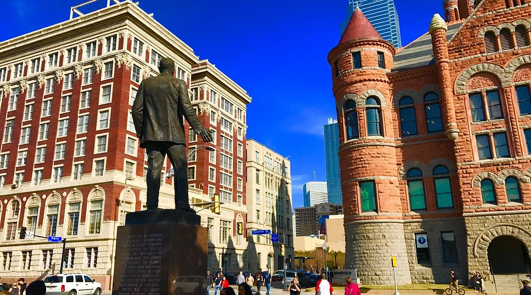
Dealey Plaza é considerada o berço de Dallas — foi ali que John Neely Bryan fundou a cidade em 1841, às margens do Trinity River. Um século depois, o local ficou marcado por outro capítulo: em 22 de novembro de 1963, o presidente John F. Kennedy foi assassinado exatamente nesta praça, um dos eventos mais documentados do século XX. A alguns passos dali fica o Memorial JFK, projetado pelo arquiteto Philip Johnson e inaugurado em 1970 — um cenotáfio aberto, sem teto, que remete simbolicamente a um túmulo vazio, já que o corpo do presidente está enterrado em Arlington. É um espaço de silêncio e reflexão em pleno centro de Dallas, bem diferente do resto da cidade que vocês vão explorar nos próximos dias.
📍 Uptown, Dallas · a caminho do Downtown
Culinária: Tex-Mex tradicional · ambiente descontraído e animado
💰 ~US$ 15–25 por pessoa
🅿️ Estacionamento gratuito no local ou vagas de rua em Uptown
✅ Sem reserva

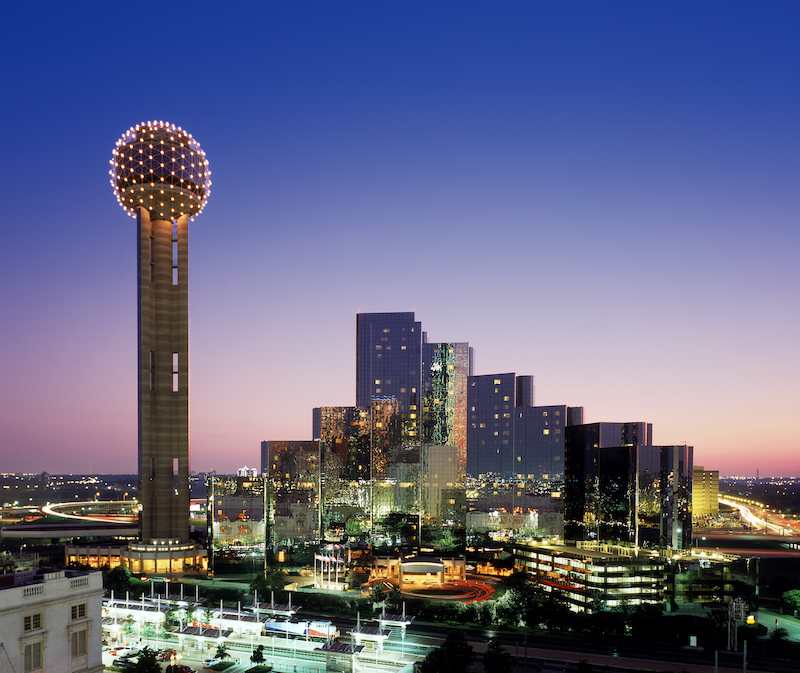
Concluída em 1978, a Reunion Tower é a esfera geodésica que domina o skyline de Dallas — 170 metros de altura, hoje parte do complexo do Hyatt Regency. O GeO-Deck, no topo, oferece vista de 360° sobre a cidade, com telescópios de alta definição e um trecho de piso de vidro para quem topa o desafio. À noite, a esfera se transforma num show de luzes LED sincronizado, visível de vários pontos de Downtown — um símbolo tão de Dallas quanto as próprias longhorns que vocês viram hoje mais cedo. Chegar perto do pôr do sol garante o melhor dos dois mundos: a cidade ainda iluminada pelo dia e as luzes noturnas começando a acender lá embaixo.
📍 Downtown Dallas
Culinária: Steakhouse texana clássica · ambiente elegante, ideal pra celebrar a chegada
💰 ~US$ 60–90 por pessoa
🅿️ Costuma oferecer valet — vale confirmar a tarifa ao chegar
🔴 Reserva Essencial
Segundo dia em Dallas, e o clima muda do adaptação para a imersão — hoje é dia de história e cultura. A manhã fecha o capítulo que começou ontem em Dealey Plaza: o Sixth Floor Museum conta por dentro o que vocês viram de fora. Na sequência, um mergulho no lado mais sofisticado da cidade, pela Dallas Arts District e pelo verde democrático do Klyde Warren Park — ótimo point pro almoço nos food trucks. À tarde, o clima vira boteco urbano na McKinney Avenue, com direito a bonde vintage gratuito, e a noite fecha com jantar tex-mex numa instituição local.
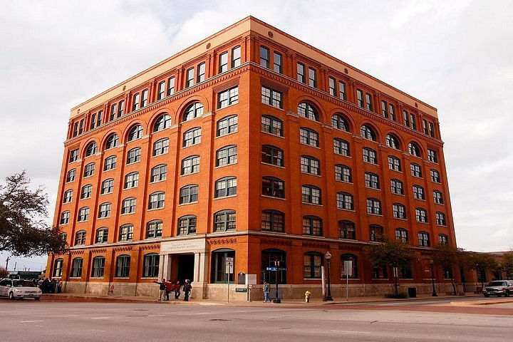
Inaugurado em 1989 no sexto andar do antigo Texas School Book Depository, o museu ocupa o mesmo prédio de onde, em 22 de novembro de 1963, partiram os tiros que mataram o presidente John F. Kennedy — na mesma Dealey Plaza que vocês viram de fora ontem. O acervo preserva a "sniper's nest" original, reconstruída atrás de um vidro protetor no canto exato da janela, além de mais de 400 fotos, vídeos de época e o Zapruder Film em loop contínuo. O áudio-guia incluso conduz por sete seções cronológicas, da campanha presidencial de 1960 ao legado do caso décadas depois. Depois de ver a praça de fora ontem, hoje vocês entendem a história de dentro pra fora — literalmente, pela mesma janela.
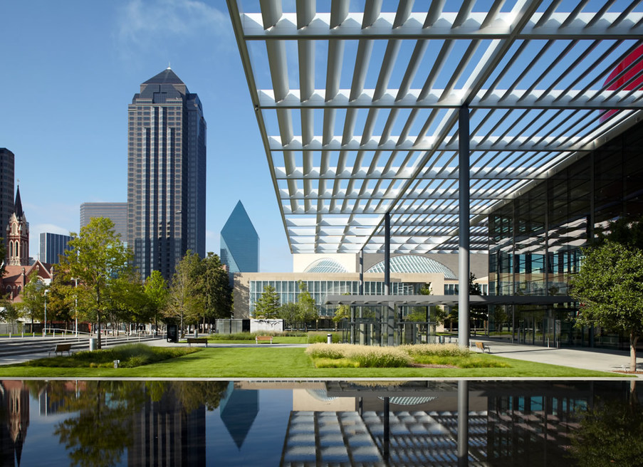
Com 68 acres distribuídos por 19 quadras no coração de Downtown, é o maior distrito de artes contíguo dos Estados Unidos — um raro cluster urbano que reúne museu, ópera, teatro e orquestra sinfônica a poucos passos um do outro. O destaque é o Dallas Museum of Art, com entrada geral gratuita (uma raridade entre museus desse porte nos EUA) e acervo que vai da arte pré-colombiana à contemporânea. Ao redor, a própria arquitetura já é atração: o Morton H. Meyerson Symphony Center, assinado por I.M. Pei — o mesmo arquiteto da pirâmide do Louvre — e o Winspear Opera House, com sua fachada vermelha translúcida. Reservem pelo menos uma hora só pra caminhar entre os prédios; é um dos poucos lugares em Dallas onde dá pra sentir clima de capital cultural europeia.
📍 Klyde Warren Park, Downtown Dallas
Culinária: variada — tex-mex, comida americana, vegana e mais · ambiente descontraído, ao ar livre
💰 ~US$ 12–20 por pessoa
🅿️ O parque tem garagem própria paga, logo abaixo do gramado
✅ Sem reserva
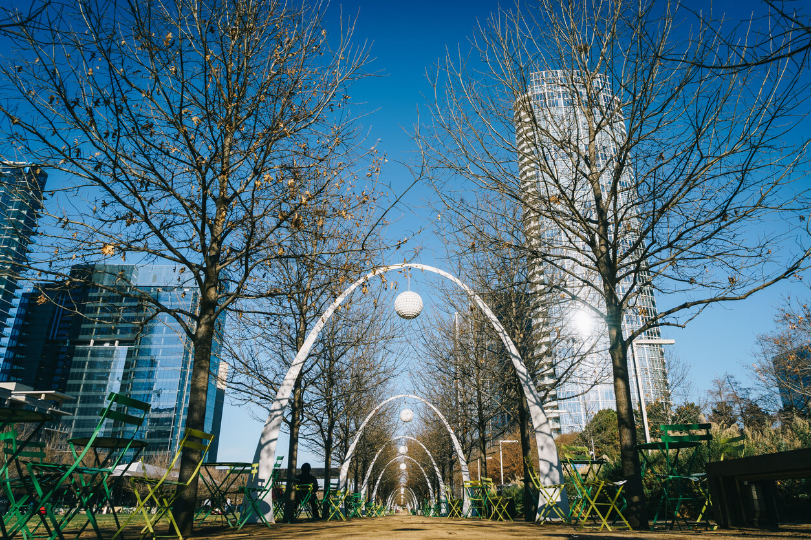
Inaugurado em 2012, o parque de 2,1 hectares foi construído literalmente sobre a Woodall Rodgers Freeway — um "parque-viaduto" que costurou de volta Uptown e o Distrito de Artes, separados pela rodovia desde os anos 1980. É o point mais democrático de Dallas: gramado aberto, jogos gigantes de xadrez, sala de leitura ao ar livre, espaço pet-friendly e, todos os dias, a fileira de food trucks rotativos que acabaram de servir o almoço de vocês. Sentem na grama, aproveitem o clima e apenas observem — é aqui que Dallas mostra o lado mais casual e vivo da cidade.

A rua mais icônica de Uptown Dallas carrega desde 1989 o McKinney Avenue Trolley (M-Line) — uma linha de bondes vintage restaurados, alguns com mais de 100 anos, que ainda circula gratuitamente conectando Uptown ao Downtown. Além do bonde, a avenida é o principal corredor gastronômico e de vida noturna de Dallas, com quarteirões de restaurantes, bares, boutiques e calçadas movimentadas — o tipo de rua que fica ainda mais bonita ao anoitecer, com as luzes acendendo nas fachadas. Se o cronograma permitir, peguem o bonde ao menos uma vez — é gratuito e vira uma lembrança e tanto da viagem.
📍 Knox-Henderson, a poucos minutos da McKinney Avenue
Culinária: Tex-Mex · ambiente animado, instituição nascida em Dallas
💰 ~US$ 25–35 por pessoa
🅿️ Estacionamento com valet disponível
⚠️ Reserva Recomendada
Depois de dois dias de cidade grande, hoje o roteiro respira mais devagar. Grapevine é uma cidadezinha histórica a poucos minutos do hotel, autoproclamada capital do vinho do Texas — ruas de tijolo, fachadas antigas e vinícolas urbanas para degustar sem sair do centro. À tarde, a experiência muda de tom com um range de tiro esportivo, bem à moda texana, antes do jantar de churrasco numa das casas de BBQ mais respeitadas da região.
Fundada em 1844 às margens do rio que dá nome à cidade, Grapevine preservou seu centro histórico como poucas cidades da região metropolitana de Dallas — quarteirões de fachadas de tijolo do início do século XX, hoje ocupados por boutiques, antiquários e salas de degustação. A cidade se autodeclara "Wine Capital of Texas": mesmo sem vinhedos dentro do perímetro urbano, dezenas de vinícolas do Texas Hill Country mantêm tasting rooms na Main Street, o que transformou a rua num circuito de degustação a pé. É um contraste e tanto com os arranha-céus de Downtown Dallas que vocês exploraram ontem — aqui o ritmo é de cidade pequena, sem pressa.
A maioria das vinícolas com tasting room em Grapevine cultiva as uvas no Texas Hill Country, a algumas horas dali, e traz o vinho pronto ou semi-pronto pra engarrafar e servir na cidade — um modelo que virou marca registrada da região. As degustações costumam vir em flights de 4 a 6 taças, com um sommelier ou atendente explicando cada rótulo, e não é incomum sair de uma sala com uma taça na mão e entrar na próxima poucos metros depois. É uma introdução leve e boa companhia ao vinho americano, bem diferente do que se prova no Brasil ou na Europa.
📍 Grapevine Historic Main Street
Culinária: variada — cafés, bistrôs, comida americana · ambiente charmoso, ao ar livre
💰 ~US$ 15–25 por pessoa
🅿️ Estacionamento gratuito na região
✅ Sem reserva
Atirar num range comercial é uma das experiências mais "só nos EUA" que existem — instrutores treinados, equipamento de proteção incluso e armas de diferentes calibres disponíveis pra alugar, do revólver clássico ao rifle. A maioria dos ranges na região de Dallas–Fort Worth recebe turistas rotineiramente e oferece pacotes iniciantes, com instrução básica de segurança antes de qualquer disparo. Vamos confirmar com vocês a unidade mais conveniente conforme a rota do dia e fechar a reserva com antecedência — muitos exigem agendamento, principalmente em sextas-feiras.
📍 Coppell, a caminho do hotel em Las Colinas
Culinária: churrasco texano tradicional (BBQ) · ambiente informal, self-service pelo defumador
💰 ~US$ 20–30 por pessoa
🅿️ Estacionamento próprio e gratuito
✅ Sem reserva
Hoje é dia de conhecer o lado mais moderno e descolado de Dallas — e também um dos mais especiais da viagem. A manhã passa pelo charme de bairro do Bishop Arts District e pela energia urbana e artística de Deep Ellum, repleta de murais e vida de rua. À tarde, o roteiro abre espaço pro ensaio pré-wedding do casal, com a Margaret Hunt Hill Bridge e Trinity Groves como pano de fundo — um dos cartões-postais mais bonitos e modernos da cidade. A noite fecha com jantar especial pra celebrar o momento.

No bairro histórico de Oak Cliff, a poucos minutos de Downtown, o Bishop Arts District nasceu como zona comercial no início do século XX e virou, nas últimas duas décadas, um dos endereços mais cobiçados de Dallas — ruas estreitas e arborizadas, casinhas convertidas em boutiques independentes, galerias e cafés. É o tipo de bairro pra andar sem pressa, entrando em lojas por curiosidade e parando pra um café gelado no meio da manhã texana.

No início do século XX, Deep Ellum era um dos poucos bairros de Dallas onde músicos negros podiam se apresentar livremente — nomes como Blind Lemon Jefferson tocaram blues nesses mesmos quarteirões, e o bairro virou referência nacional de jazz e blues. Hoje, a herança musical convive com uma das maiores coleções de arte de rua do Texas: dezenas de murais espalhados por becos e fachadas, muitos assinados por artistas locais e renovados periodicamente. De dia, o clima é de bairro criativo, com cervejarias artesanais e cafés; à noite, vira um dos points de música ao vivo mais animados da cidade.
📍 Deep Ellum, Dallas
Culinária: variada — do casual ao gastronômico · ambiente descolado, cheio de personalidade
💰 ~US$ 15–30 por pessoa
🅿️ Vagas de rua pagas ou estacionamentos por hora
✅ Sem reserva

Inaugurada em 2012, a Margaret Hunt Hill Bridge foi assinada pelo arquiteto espanhol Santiago Calatrava — o mesmo por trás de pontes e estações ao redor do mundo — e se tornou o símbolo mais reconhecível da Dallas contemporânea, com seu arco branco de 120 metros de altura sobre o rio Trinity. Aos pés da ponte, do lado oeste, fica o Trinity Groves, um complexo de restaurantes e espaços criativos com vista pro próprio arco e pro skyline de Downtown ao fundo — cenário perfeito pra fechar o ensaio com a cidade inteira como pano de fundo. É, sem dúvida, um dos points mais bonitos e simbólicos de Dallas pra registrar esse momento de vocês.
📍 Bishop Arts District
Culinária: italiana contemporânea · ambiente intimista, ideal pra celebrar
💰 ~US$ 50–80 por pessoa
🅿️ Vagas de rua no Bishop Arts District
🔴 Reserva Essencial
Hoje o roteiro sai de Dallas e mergulha no autêntico clima do Velho Oeste em Fort Worth, cidade vizinha com identidade própria e menos arranha-céus. Os Stockyards são o coração do dia — cowboys, gado texano e a icônica Cattle Drive ao meio-dia, num cenário que parece cenário de filme. À tarde, o passeio segue pra Sundance Square, o centro histórico revitalizado de Fort Worth, com arquitetura bonita e clima mais tranquilo que Downtown Dallas.
O rodeio no Cowtown Coliseum, dentro dos Stockyards, normalmente acontece nas noites de sexta e sábado — não necessariamente aos domingos. Vamos confirmar a programação da semana de vocês mais perto da data; se não houver sessão no domingo, os Stockyards continuam valendo o passeio pela Cattle Drive, pela arquitetura histórica e pelas lojas de artigos western.

Entre o final do século XIX e meados do XX, os Stockyards foram um dos maiores mercados de gado dos Estados Unidos, ponto final de rotas como a Chisholm Trail que atravessavam o Texas inteiro. Hoje, o distrito histórico preserva essa identidade com lojas de botas e chapéus, saloons centenários e, duas vezes ao dia, a Fort Worth Herd Cattle Drive — uma boiada de longhorns genuína conduzida por cowboys a cavalo, em trajes de época, descendo a Exchange Avenue como acontecia há mais de um século. É a experiência mais "filme de faroeste" que dá pra viver de verdade nos Estados Unidos, sem exagero.
📍 Fort Worth Stockyards
Culinária: texana e steakhouse casual · ambiente temático, western
💰 ~US$ 20–35 por pessoa
🅿️ Estacionamentos pagos por hora na região
✅ Sem reserva

Batizada em homenagem a Butch Cassidy e seu bando (o "Sundance Kid" teria se escondido na região), a Sundance Square é o resultado de um dos projetos de revitalização urbana mais bem-sucedidos do Texas — 35 quarteirões de prédios históricos recuperados nos anos 1980 e 1990, hoje ocupados por restaurantes, lojas, cinema e a praça com fontes que vira point de encontro da cidade. É um contraponto tranquilo à energia cowboy dos Stockyards: aqui o clima é de centro histórico europeu, com arquitetura de tijolo à vista e calçadas largas.
Último dia em Dallas, dedicado às compras, às últimas lembranças da viagem e à organização das malas antes do voo matinal pra Miami amanhã. A manhã é livre pro NorthPark Center — um dos shoppings mais bonitos dos Estados Unidos — e à tarde sobra tempo pra qualquer pendência de compras práticas. O jantar de despedida fecha a passagem por Dallas com chave de ouro, antes de uma noite de sono bem aproveitada: o voo pra Miami sai bem cedo, às 07h00.
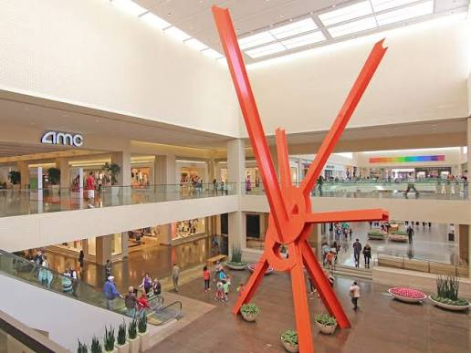
Inaugurado em 1965 pela família Nasher — a mesma por trás do Nasher Sculpture Center que vocês viram no Dia 02 —, o NorthPark Center é um dos shoppings mais premiados dos Estados Unidos, com lojas como Neiman Marcus, Nordstrom e as principais grifes internacionais. O diferencial está nos corredores: obras originais de Henry Moore, Claes Oldenburg e Andy Warhol estão espalhadas pelo shopping como se fosse uma galeria de arte contemporânea a céu coberto — um museu disfarçado de shopping. Se sobrar tempo, a alternativa é a Galleria Dallas, mais tradicional, com direito a pista de patinação no gelo no meio do salão central.
Como o voo pra Miami sai às 07h00 do dia seguinte, vale organizar as malas ainda à tarde, sem deixar tudo pra última hora da noite. Se topar rolar um jogo do Dallas Mavericks no American Airlines Center essa semana, pode ser uma alternativa animada ao jantar tradicional — mas vale lembrar que a manhã seguinte começa cedo, então um evento mais curto ou um jantar tranquilo tende a render uma noite de sono melhor antes da viagem pra Miami.
Depois de seis dias de Texas, a viagem muda completamente de paisagem — água turquesa, prédios Art Deco em tons pastel e uma energia latina que faz Miami parecer, em muitos cantos, uma extensão do Caribe dentro dos Estados Unidos. É praia, é história, é vida noturna, e também um pedaço genuíno de natureza selvagem a poucos minutos da cidade.
Depois do voo matinal de Dallas, vocês pousam em Fort Lauderdale já perto do meio-dia e seguem direto pra Miami Beach — cerca de 45 minutos de carro até o hotel. A tarde é de reconhecimento: Ocean Drive, a praia de South Beach e o charme pastel do Art Deco District, sem compromisso de horário. A noite fecha leve, com jantar em Miami Beach e uma volta a pé pela Ocean Drive já iluminada — um dia pensado pra vocês descansarem da mudança de cidade antes de acelerar amanhã.
O voo pousa em Fort Lauderdale (FLL), não direto em Miami — um aeroporto menor, mais tranquilo pra desembarque, a cerca de 45 minutos de Uber ou carro alugado até Miami Beach. Depois de retirar bagagem e o carro, o trajeto até o hotel passa pela I-95, uma prévia rápida da paisagem de palmeiras e água que vai definir os próximos quatro dias.
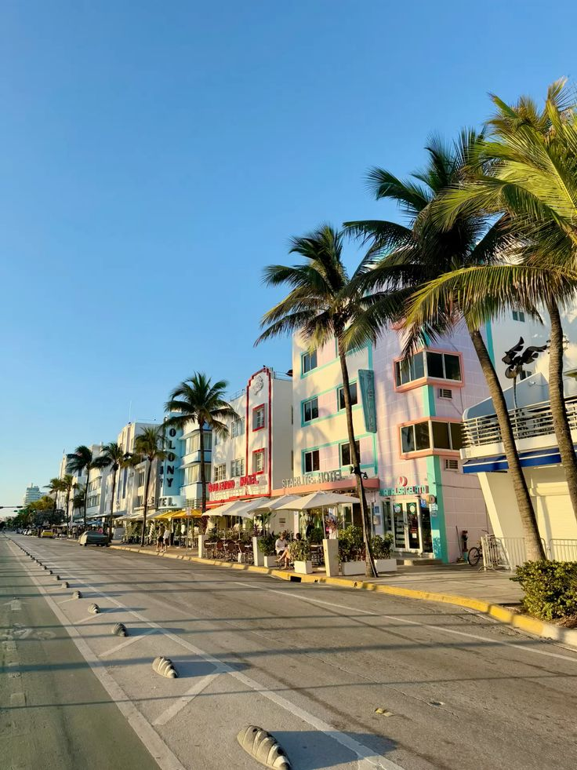
A Ocean Drive corre paralela à praia por 15 quadras, cercada por hotéis Art Deco em tons pastel que viraram símbolo mundial de Miami a partir da revitalização liderada pela ativista Barbara Baer Capitman nos anos 1970 e 80. Do outro lado da rua, o Lummus Park é a faixa verde entre o asfalto e a areia — palmeiras, quadras de vôlei e as torres de salva-vidas coloridas, cada uma com um design diferente, que são um dos ícones mais fotografados da cidade. É o tipo de lugar pra caminhar devagar, sem roteiro fixo, só absorvendo o clima.
A faixa de areia branca de South Beach se estende por quilômetros, com água morna e rasa por boa distância — resultado, em parte, de projetos de recomposição costeira que trouxeram areia de outras regiões pra restaurar a praia depois de décadas de erosão. É larga o suficiente pra nunca parecer lotada, mesmo em dias cheios, e funciona tanto pra quem quer nadar quanto pra quem só quer sentar e ver o movimento passar.
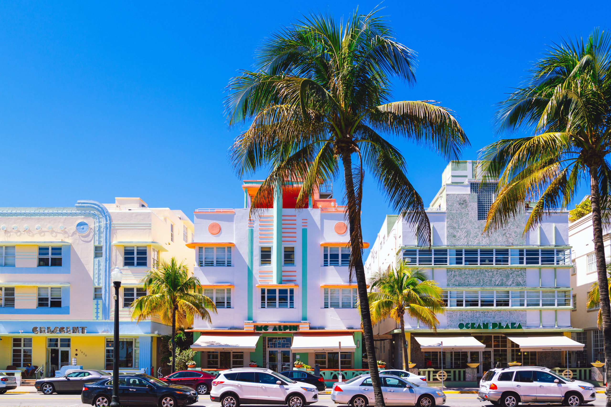
Reconhecido pelo Registro Nacional de Lugares Históricos desde 1979, o Art Deco District reúne mais de 800 prédios construídos entre os anos 1920 e 1940 — a maior concentração dessa arquitetura no mundo. As fachadas trazem elementos geométricos, janelas em formato de vigia, "sobrancelhas" de concreto pra sombrear o sol tropical e uma paleta de cores pastel que virou sinônimo visual de Miami. O distrito só existe hoje graças à luta da preservacionista Barbara Baer Capitman, que nos anos 1970 impediu que boa parte desses prédios fosse demolida pra dar lugar a construções modernas.
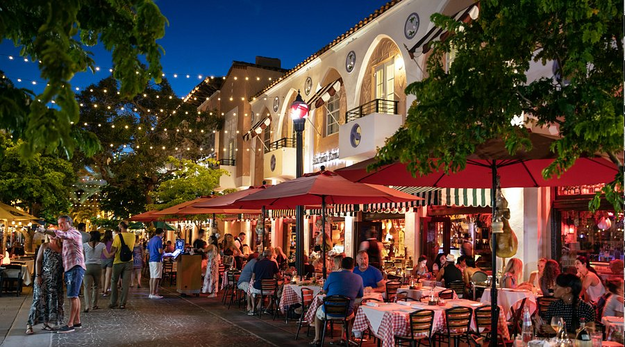
Construída em 1925 no estilo mediterrâneo, com fachadas rosadas e telhados de telha, a Espanola Way nasceu com a intenção de virar uma colônia de artistas — hoje é uma rua de pedestres tranquila, cercada de cafés, restaurantes e lojinhas, um contraponto mais intimista à agitação da Ocean Drive a poucos metros dali. À noite, as mesas na calçada e as luzes penduradas entre os prédios criam um clima de vilarejo europeu improvável em pleno South Beach.
📍 South Beach, Miami — instituição desde 1913
Culinária: frutos do mar, especializada em stone crab · ambiente clássico e animado
💰 ~US$ 60–90 por pessoa
🅿️ Vagas de rua limitadas ou estacionamento pago próximo
🔴 Reserva Essencial
Hoje o roteiro sai da praia e mostra a Miami que trabalha e cria arte. A manhã passa pelo Downtown, com a marina do Bayside Marketplace e a vista de Bayfront Park sobre a Biscayne Bay — inclusive com a opção de um passeio de barco pelas mansões de celebridades. O almoço fica em Brickell, o distrito financeiro que virou point gastronômico, e a tarde fecha em Wynwood, o bairro que trocou galpões industriais por um dos maiores museus de arte de rua a céu aberto do mundo.
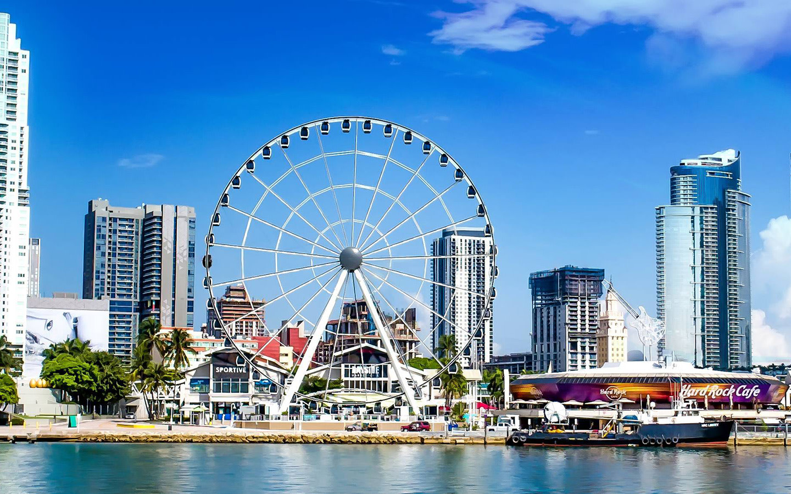
Inaugurado em 1987 à beira da Biscayne Bay, o Bayside Marketplace é um complexo de lojas, restaurantes e uma marina de onde saem os passeios de barco mais procurados de Miami — incluindo tours pelas ilhas artificiais onde moram celebridades, com direito a apontar a casa de quem for famoso o suficiente. Ao lado, o Bayfront Park oferece uma vista aberta da baía e do skyline de Downtown, com o anfiteatro Klipsch como point de eventos ao ar livre. É um Downtown diferente do de Dallas — mais litorâneo, mais informal, com o mar sempre por perto.
📍 Brickell, Miami
Culinária: variada, do casual ao contemporâneo · ambiente urbano, cheio de executivos no almoço
💰 ~US$ 20–35 por pessoa
🅿️ Garagens pagas por hora, comuns nos prédios comerciais
✅ Sem reserva
Brickell é o distrito financeiro de Miami, apelidado de "Manhattan do Sul" pela densidade de arranha-céus — sede de bancos internacionais e um dos bairros que mais cresceu verticalmente na última década nos Estados Unidos. O Brickell City Centre é o point comercial da região: um shopping a céu aberto com uma cobertura chamada "Climate Ribbon", desenhada pra captar brisa e chuva naturalmente e reduzir o calor sem depender só de ar-condicionado — um detalhe de engenharia que passa despercebido pra maioria dos visitantes.
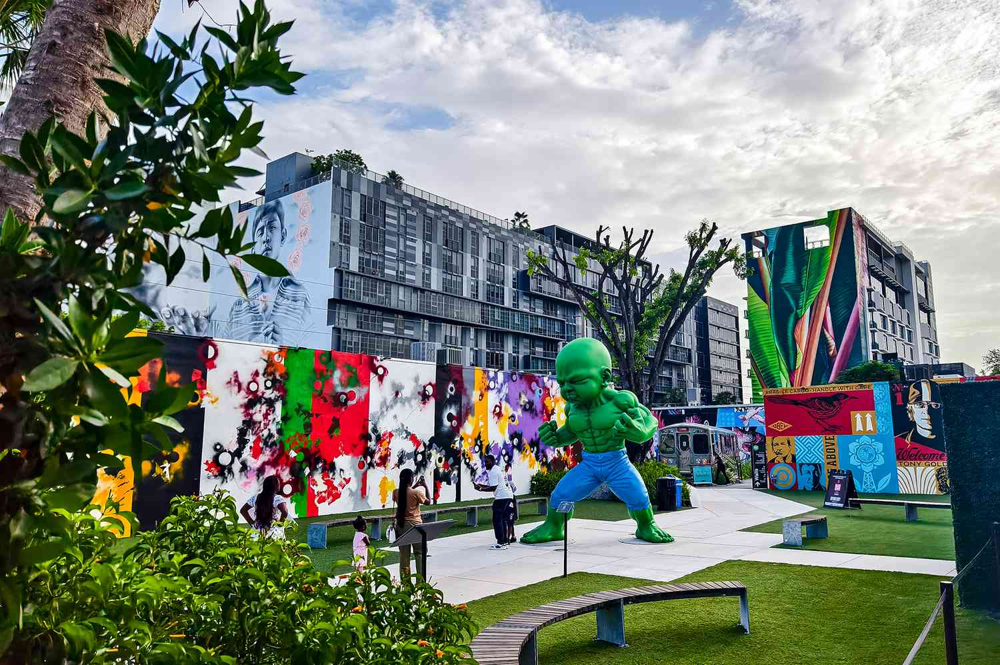
Fundado em 2009 pelo empreendedor Tony Goldman, o Wynwood Walls transformou um antigo distrito de galpões industriais num dos endereços de arte urbana mais respeitados do mundo, com murais assinados por artistas internacionalmente reconhecidos renovados periodicamente. O sucesso do projeto contagiou o bairro inteiro: hoje as ruas ao redor do espaço pago viraram uma galeria gratuita e permanente, com fachadas inteiras pintadas, cervejarias artesanais e cafés instalados nos antigos galpões. É Miami em sua versão mais criativa e menos praiana.
📍 Wynwood, Miami
Culinária: asiática contemporânea, grelhados no fogo · ambiente descolado, industrial-chic
💰 ~US$ 40–60 por pessoa
🅿️ Vagas de rua pagas ou estacionamentos por hora na região
⚠️ Reserva Recomendada
Hoje é o dia mais completo em Miami, com saída cedo pra aproveitar bem o tempo. Primeiro, uma imersão na natureza selvagem da Flórida nos Everglades, de airboat entre jacarés e vegetação de pântano — o oposto completo da praia dos últimos dias. Na volta, o almoço fica em Coral Gables, cidade planejada com arquitetura mediterrânea, e a tarde passa pela histórica piscina Venetian Pool e pelo clima boêmio e arborizado de Coconut Grove, o bairro mais antigo de Miami.
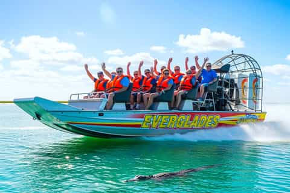
Os Everglades formam a maior área de terras úmidas subtropicais dos Estados Unidos — um "rio de grama" que se move lentamente rumo ao mar, reconhecido pela UNESCO simultaneamente como Patrimônio Mundial, reserva da biosfera e área úmida de importância internacional, uma combinação rara no planeta. Os passeios de airboat — barcos de fundo chato movidos por uma hélice aérea gigante — deslizam sobre a vegetação rasa a alta velocidade, parando em pontos estratégicos pra observar jacarés, aves e a vida selvagem do pântano bem de perto. É a Flórida mais crua e menos turística que existe, a poucos minutos de distância da praia.
📍 Miracle Mile, Coral Gables
Culinária: variada, com forte presença mediterrânea e latina · ambiente elegante e arborizado
💰 ~US$ 25–40 por pessoa
🅿️ Parquímetro na Miracle Mile ou estacionamentos municipais próximos
✅ Sem reserva
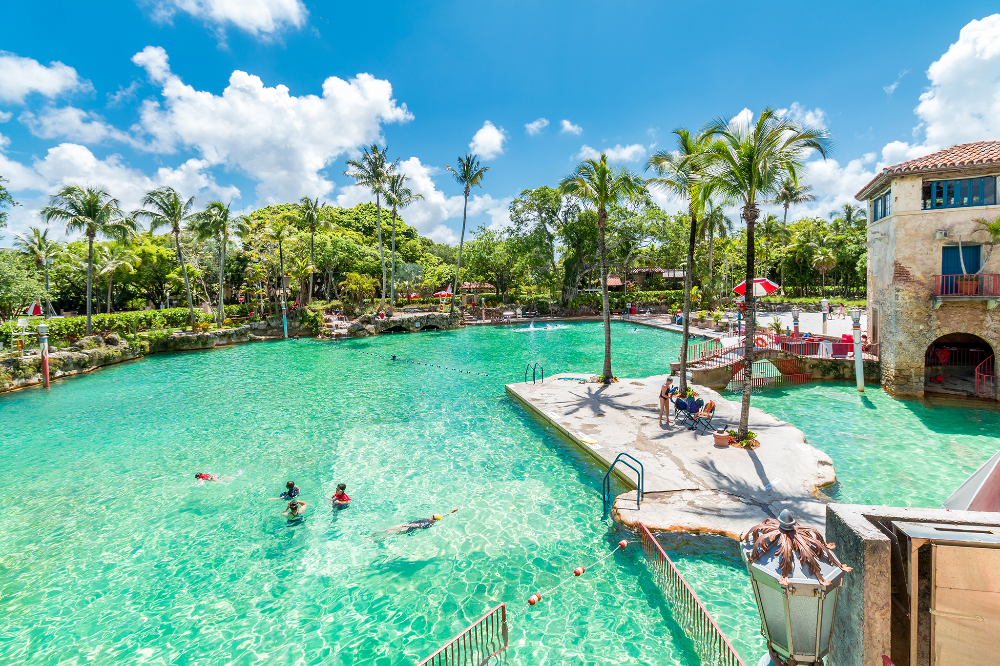
Esculpida em 1924 dentro de uma antiga pedreira de rocha coralina, a Venetian Pool é abastecida por água de nascente e decorada com grutas, cachoeiras artificiais e uma ponte inspirada em Veneza — parte do projeto urbanístico do fundador de Coral Gables, George Merrick, que planejou a cidade inteira com arquitetura de inspiração mediterrânea. Está no Registro Nacional de Lugares Históricos e é considerada uma das piscinas públicas mais bonitas dos Estados Unidos, bem diferente de qualquer clube ou resort convencional.
Habitado desde o século XIX, antes mesmo da fundação de Miami, Coconut Grove é o bairro mais antigo da cidade e mantém um clima boêmio e arborizado que destoa do resto do litoral — ruas cobertas por copas de árvores centenárias, à beira da Biscayne Bay. Dentro do bairro fica o Barnacle Historic State Park, a casa mais antiga de Miami-Dade ainda no terreno original, construída em 1891 pelo pioneiro Ralph Munroe — uma pausa histórica opcional pra quem quiser espiar como se vivia ali antes dos arranha-céus.
Último dia inteiro em Miami, e o roteiro fecha com o pé na areia. A Rickenbacker Causeway leva vocês até Key Biscayne, ilha residencial com algumas das praias mais bonitas da região — Hobie Beach pra quem curte esportes aquáticos, Crandon Park pra relaxar. O fim de tarde é reservado pro Bill Baggs Cape Florida State Park, com o farol mais antigo de Miami-Dade e um dos melhores pôr do sol da cidade, antes de voltarem pra última noite em Miami Beach.
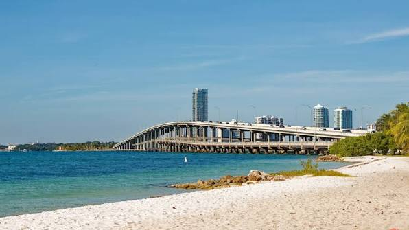
Batizada em homenagem a Eddie Rickenbacker, ás da aviação na Primeira Guerra Mundial, a causeway conecta o continente a Key Biscayne com uma das vistas mais bonitas de Miami — o skyline de Brickell de um lado, a baía turquesa do outro. Na metade do caminho fica Hobie Beach, uma faixa de areia sem ondas fortes, point tradicional de windsurf, stand-up paddle e kitesurf, além de ser uma das poucas praias da região que aceita cachorros. É uma parada rápida antes de seguir pra Key Biscayne propriamente dita.
Com quase três quilômetros de areia clara e água calma, Crandon Park costuma aparecer em listas das melhores praias dos Estados Unidos — mais tranquila e menos badalada que South Beach, com bastante sombra de coqueiros e boa estrutura de apoio. É um ótimo lugar pra almoçar num quiosque local e passar a tarde relaxando antes do fechamento do dia no farol.

Na ponta sul de Key Biscayne, o parque abriga o Farol de Cape Florida, construído em 1825 — a estrutura mais antiga ainda de pé em todo o condado de Miami-Dade, reconstruída depois de um ataque durante as Guerras Seminole. Além da praia e das trilhas na mata litorânea, o parque é famoso pelo pôr do sol sobre a Biscayne Bay, com a skyline de Miami recortada ao fundo — um jeito e tanto de fechar a passagem de vocês pela cidade antes de seguir pra Orlando amanhã.
📍 Faena Hotel, Miami Beach
Culinária: fogo aberto, inspiração argentina · ambiente sofisticado, ideal pra fechar a passagem por Miami
💰 ~US$ 70–100 por pessoa
🅿️ Valet disponível no hotel
🔴 Reserva Essencial
A última parada da viagem é também a mais aguardada por muita gente — a capital mundial dos parques temáticos, onde adulto vira criança sem pedir licença. Depois da praia de Miami, o roteiro muda de ritmo mais uma vez: aqui o dia gira em torno de fila, adrenalina e um nível de capricho na experiência do visitante que poucos lugares no mundo conseguem igualar.
Dia de virar a chave: de manhã ainda sobra tempo pra compras num outlet ou shopping perto de Miami, antes de encarar as cerca de 3h30 de estrada até Orlando. É também dia de Halloween nos Estados Unidos — se o horário permitir, vale reparar nas decorações e fantasias pelo caminho. Check-in no Sonesta ES Suites à tarde, e uma noite tranquila pra descansar antes da maratona de parques que começa amanhã.
O Dolphin Mall fica estrategicamente no caminho de quem sai de Miami rumo a Orlando pela I-75, o que o torna a opção mais prática de compras nesse dia — sem precisar fazer desvio de rota. É um outlet com marcas americanas populares e bom custo-benefício, formato mais informal que o NorthPark de Dallas. Outras opções ao alcance, caso prefiram, são o Sawgrass Mills (o maior outlet dos EUA, um pouco mais distante da rota) ou o Aventura Mall, mais tradicional e badalado.
Depois das compras, o trajeto até Orlando leva cerca de 3h30 pela Florida's Turnpike — uma estrada tranquila e bem sinalizada, com pedágio eletrônico (o carro alugado normalmente já vem equipado com transponder, e a cobrança cai na fatura do cartão usado na locadora). Vale abastecer o tanque antes de sair de Miami e fazer uma parada no meio do caminho pra esticar as pernas.
Primeiro dia de parque da viagem, e o EPCOT é uma ótima porta de entrada: metade parque de atrações, metade viagem pelo mundo. A manhã é de adrenalina nas montanhas-russas mais recentes do complexo — Guardians of the Galaxy e Remy's Ratatouille Adventure —, e a tarde passa devagar pelo World Showcase, os 11 pavilhões de países ao redor da lagoa, com direito a comidas e bebidas típicas de cada um.
Diferente das outras atrações da viagem, os parques da Disney exigem ingresso comprado antecipadamente e uma reserva de data específica pra cada parque — não dá pra decidir na hora e comprar na porta. Vamos indicar junto com a curadoria o melhor tipo de ingresso (avulso ou pacote multi-dia) e o processo de reserva, incluindo se vale a pena contratar o Lightning Lane pra pular filas nas atrações mais concorridas.
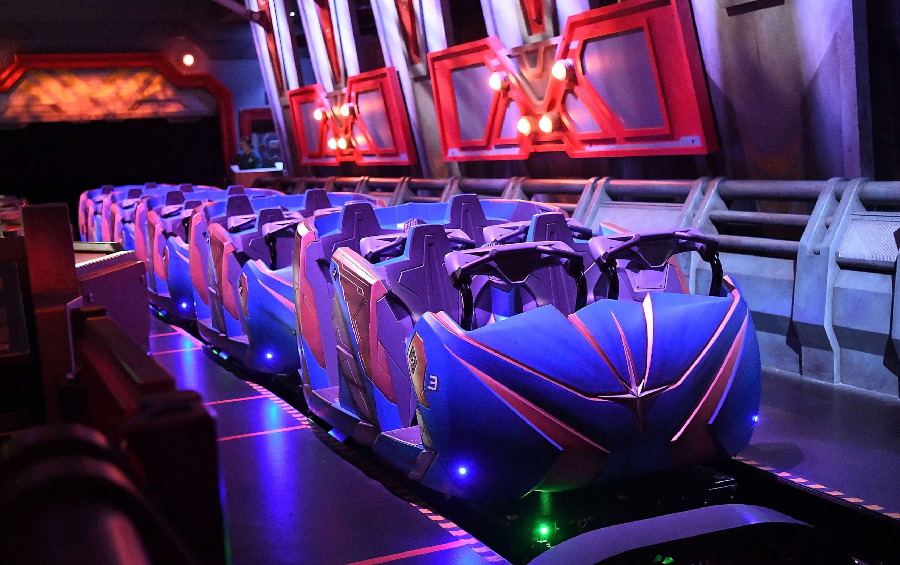
Inaugurada em 2022, é a montanha-russa mais longa já construída pela Disney, com veículos que giram livremente enquanto disparam por um lançamento reverso — tudo isso dentro de um espaço fechado, com uma trilha sonora sincronizada dos Guardiões da Galáxia. É consistentemente apontada como uma das melhores atrações de toda a Disney World, e a fila costuma ser das mais concorridas do EPCOT.
Inaugurada em 2021 para o 50º aniversário da Disney World, a atração usa veículos sem trilhos visíveis, em forma de ratinho, pra fazer os visitantes "encolherem" até o tamanho de Remy, o protagonista do filme Ratatouille da Pixar. A experiência mistura projeções, cheiros de cozinha francesa e movimentos surpreendentes — uma disputa acirrada com Guardians pelo posto de atração mais concorrida do parque.
Dentro do pavilhão da Noruega, o passeio de barco recria as cenas e canções de Frozen — incluindo, claro, uma boa passada pelo clássico "Let It Go". A fila costuma ser uma das mais longas do parque por ser adorada tanto por crianças quanto por adultos fãs do filme.
Sentados numa espécie de asa-delta suspensa diante de uma tela IMAX curva gigante, os visitantes "sobrevoam" marcos como a Muralha da China, as pirâmides do Egito e a Torre Eiffel, com direito a efeitos de vento e cheiro sincronizados com a paisagem. É uma das atrações mais tranquilas e family-friendly do EPCOT, ótima pra quem quer uma pausa da adrenalina.

A esfera de 55 metros de diâmetro é o símbolo mais reconhecível do EPCOT desde a inauguração do parque em 1982 — dentro dela, um passeio lento em veículos que sobem em espiral conta a história da comunicação humana, das pinturas rupestres à internet. É um passeio contemplativo, sem sustos, e um bom ponto de partida pra entender a proposta original do parque: educação disfarçada de entretenimento.
Caminhar do México ao Canadá em cerca de 2 quilômetros ao redor da lagoa central — essa é a proposta do World Showcase, 11 pavilhões que recriam com detalhe a arquitetura, a gastronomia e a cultura de cada país, com funcionários que de fato são nativos ou residentes desses lugares. É o point ideal pra fechar o dia devagar, beliscando comida típica de nação em nação até escurecer e ver a lagoa se iluminar.
Depois do primeiro parque, hoje é dia de conhecer o outro lado de Orlando. A manhã fica no Disney Springs, complexo gratuito de compras e entretenimento a céu aberto, e a tarde muda completamente de clima em Winter Park — cidade histórica, arborizada e sofisticada, quase o oposto do universo dos parques. A noite fecha com jantar numa steakhouse americana tradicional.
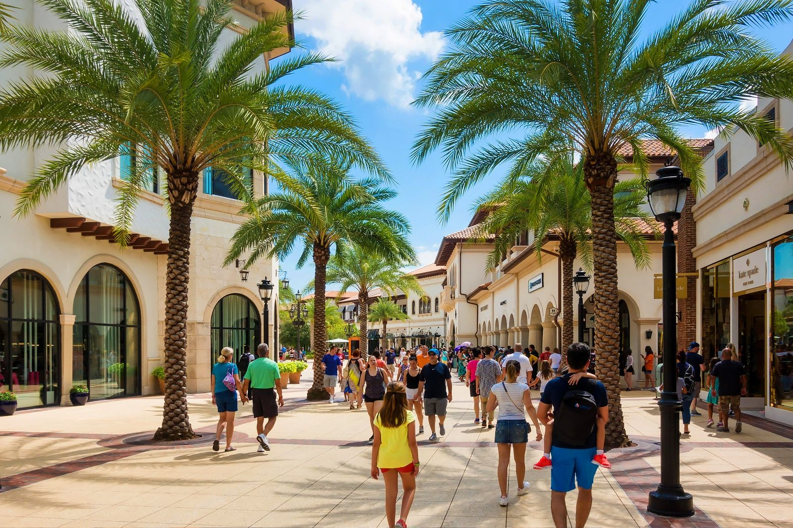
Aberto desde 1975 sob outro nome, o complexo evoluiu ao longo das décadas até virar o Disney Springs em 2015 — hoje dividido em quatro áreas temáticas (Marketplace, The Landing, Town Center e West Side), com lojas, restaurantes e atrações que não exigem ingresso de parque. É um dia mais leve dentro do universo Disney: dá pra visitar de shorts e chinelo, sem fila de montanha-russa, só aproveitando lojas exclusivas e a arquitetura cenográfica de cada setor.
Fundada no final do século XIX como refúgio de inverno pra famílias ricas do norte dos Estados Unidos, Winter Park mantém até hoje o clima de cidade pequena e elegante — ruas arborizadas, casarões e a Park Avenue, a avenida principal com boutiques, galerias e cafés. Uma atração opcional e charmosa é o Scenic Boat Tour, passeio de barco de uma hora em operação desde 1938 pelos lagos e canais da cidade, passando por mansões e pela Rollins College. Depois de dias intensos de parque, é o tipo de tarde que rende um respiro bem-vindo.
📍 Disney Springs, The Landing
Culinária: steakhouse americana com frutos do mar · ambiente à beira do lago, com barcos-anfíbios de época passando ao lado
💰 ~US$ 45–65 por pessoa
🅿️ Estacionamento gratuito do Disney Springs
⚠️ Reserva Recomendada
O parque mais clássico e fotografado da Disney World, com o Castelo da Cinderela no centro de tudo. O dia mistura montanhas-russas família como a Seven Dwarfs Mine Train e a Big Thunder Mountain com dark rides atemporais como Pirates of the Caribbean e Haunted Mansion. À tarde rola o desfile Festival of Fantasy, e a noite fecha com o show de fogos e projeções sobre o castelo — um dos momentos mais emocionantes de toda a viagem.
Assim como no EPCOT, o Magic Kingdom exige ingresso e reserva de data feitos com antecedência. Por ser o parque mais procurado do complexo, as reservas de data costumam esgotar primeiro em períodos de alta demanda — vale garantir isso assim que os voos e hospedagens estiverem 100% confirmados.

Inaugurada em 2014, é uma montanha-russa família com vagonetes que balançam de um lado pro outro nas curvas, ambientada na mina dos sete anões de Branca de Neve. Rápida, divertida e sem quedas assustadoras, costuma ter uma das maiores filas do Magic Kingdom — reservar horário com antecedência faz toda diferença no dia.
Aberta em 1973, é uma das atrações mais antigas ainda em operação no Magic Kingdom — e uma curiosidade e tanto: o passeio de barco original é de 1967 (Disneyland, Califórnia) e inspirou a franquia de filmes com Johnny Depp, não o contrário. Animatrônicos, cenários escuros e a trilha sonora icônica seguem encantando gerações, num ritmo tranquilo, sem sustos bruscos.
Aberta desde a inauguração do parque em 1971, a mansão assombrada é mais divertida do que assustadora — um passeio em "Doom Buggies" por salões com ilusões óticas, retratos que se transformam e o famoso salão de baile de fantasmas. É clássica o bastante pra ter virado referência cultural fora dos parques, incluindo um filme homônimo.
Em operação desde 1980, simula a fuga descontrolada de um trem de mineração pelas montanhas — depois de Fort Worth, no Dia 05, um retorno e tanto ao clima western, dessa vez com muito mais velocidade. É considerada uma montanha-russa "gateway", perfeita pra quem está pegando gosto por adrenalina sem partir direto pros extremos.
Aberta desde 1971, é um dos passeios mais amados do parque — veículos em formato de navio pirata "voam" suspensos sobre miniaturas de Londres e da Terra do Nunca. Por ser um projeto original dos anos 1970, com capacidade limitada de veículos, a fila costuma ser desproporcionalmente longa pra atração tão curta — vale reservar horário com prioridade.

Com 57 metros de altura, o castelo usa um truque clássico de perspectiva forçada — os tijolos e detalhes ficam proporcionalmente menores conforme sobem, fazendo a estrutura parecer ainda mais alta e imponente do que realmente é. À tarde, o Festival of Fantasy Parade cruza a Main Street com carros alegóricos elaborados, incluindo um dragão cuspidor de fogo gigante inspirado na Malévola. À noite, o show de fogos de artifício com projeções na fachada do castelo fecha o dia — um dos momentos mais emocionantes de qualquer viagem à Disney.
Último dia de parque da viagem, e é também o mais adrenalínico — o Islands of Adventure reúne algumas das montanhas-russas mais premiadas do mundo, incluindo a área temática de Harry Potter mais elogiada do planeta. Se o cansaço da viagem já estiver pesando, este dia também pode virar um dia livre — a decisão fica com vocês conforme o ritmo dos dias anteriores.
Diferente da Disney, a Universal não exige reserva de data casada ao ingresso — mas comprar com antecedência online costuma sair mais barato e evita fila na bilheteria. Algumas atrações, como Hagrid's, usam fila virtual em dias de alta demanda: vale entrar no app da Universal assim que o parque abrir pra tentar um horário.
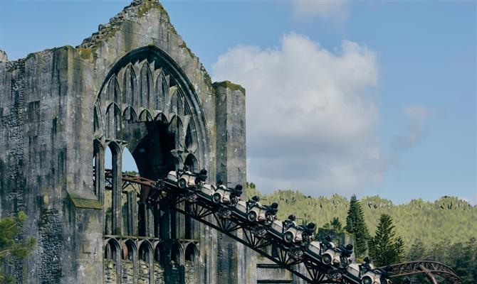
Inaugurada em 2019 na Floresta Proibida do mundo de Harry Potter, é frequentemente citada em premiações do setor como uma das melhores montanhas-russas do planeta — mistura de velocidade, narrativa envolvente e criaturas mágicas ao longo do percurso, em veículos de moto com side-car. Não é a mais radical em altura, mas é considerada uma obra-prima de storytelling dentro de um parque temático.
Aberta em 2010, a atração usa braços robóticos combinados com telas gigantes pra simular voos sobre o campo de quadribol, encontros com dragões e dementadores — uma tecnologia pioneira na época que ainda impressiona. O passeio pelo castelo de Hogwarts, com retratos que falam e salas reconstruídas com fidelidade ao universo do livro, já é uma atração em si, antes mesmo do embarque no brinquedo.
Inaugurada em 2021, é uma montanha-russa de lançamento que chega a mais de 110 km/h, com dois momentos de queda vertical e curvas que simulam ser perseguido por velocirraptores. É considerada uma das atrações mais intensas de toda Orlando — recomendada pra quem realmente curte adrenalina no talo, sem meio-termo.
Em operação desde 1999 (com grande reforma em 2016), simula o momento em que Bruce Banner se transforma no Hulk — um lançamento que leva o carrinho de 0 a mais de 100 km/h em pouquíssimos segundos, seguido de inversões e uma queda em espiral. É um clássico da Marvel Super Hero Island e ainda um dos lançamentos mais fortes do parque.
Aberta em 1999, foi pioneira ao combinar veículos em movimento com projeções 3D e cenários físicos, criando a sensação de balançar entre prédios ao lado do Homem-Aranha pela cidade. Mesmo passadas mais de duas décadas, a atração segue sendo referência técnica no setor de parques temáticos — e uma das mais amadas do Islands of Adventure.
Último dia da viagem. Check-out do Sonesta pela manhã, com o dia inteiro livre até a noite — dá pra aproveitar mais um pouco antes de encarar as cerca de 3h30 de estrada de volta a Miami. À noite, devolução do carro no aeroporto e embarque no voo internacional de volta, às 21h30, com chegada em Campo Grande na sexta-feira à tarde depois das conexões em Brasília e São Paulo.
Com o check-out feito pela manhã e as malas no porta-malas, sobra a manhã e parte da tarde livre — dá pra aproveitar mais uma piscina, um último passeio no Disney Springs ou simplesmente descansar antes da longa viagem de volta. O importante é sair de Orlando com tempo de sobra: são cerca de 3h30 de estrada até Miami, e o voo parte à noite.
Fecha-se o círculo: depois de 16 dias entre Texas, Flórida e parques temáticos, é hora de devolver o carro, passar pela imigração de saída e embarcar de volta pro Brasil. São três trechos até Campo Grande — Miami a Brasília, Brasília a São Paulo, São Paulo a Campo Grande —, com conexões calculadas pra terem tempo de sobra em cada troca de voo.
Nós utilizamos a Nomad como conta internacional durante nossas viagens e recomendamos pela praticidade e economia. A conta é em dólar e permite pagamentos em diversas moedas ao redor do mundo, com conversão automática e instantânea no momento da compra.
A transferência de dinheiro pode ser feita via Pix, e o saldo é convertido em poucos segundos diretamente pelo aplicativo. Não há cobrança de anuidade, nem taxas de abertura ou manutenção.
Abra sua conta gratuitamente com o cupom VAMOSCARIMBAR e ganhe até $20 em cashback.
→ Abrir conta Nomad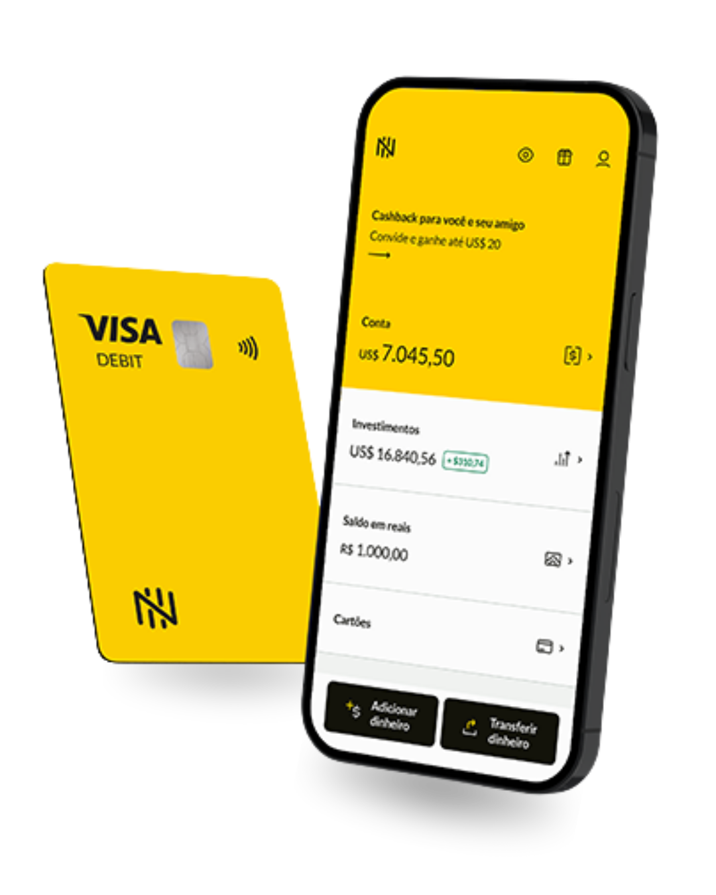
Nos EUA tudo funciona com cartão — contactless, Apple Pay e Google Pay são aceitos até em food trucks. Dinheiro em espécie é útil só para gorjetas avulsas e compras pequenas. Levem algo entre US$ 200–300 em notas de $1, $5 e $10.
Evitem sacar em ATM de rua — optem pelos caixas dentro de agências bancárias (Chase, Bank of America, Wells Fargo), que são mais seguros e têm câmeras.
Essencial nos EUA. Garçons e atendentes recebem salário base baixo e dependem da gorjeta.
• Restaurantes: 18-20% (padrão 20% em cidades grandes)
• Uber/táxi: 15-20%
• Bartender: $1-2 por drink
• Housekeeping: $2-5 por noite
• Bagageiro: $1-2 por mala
• Valet parking: $3-5
Os preços na vitrine não incluem imposto. O sales tax é adicionado no caixa — varia por estado: Texas 8,25%, Flórida 6-7%. Um produto de $100 sai por $106-108.
Em restaurantes, também aparece o imposto na conta antes da gorjeta. Gorjeta calcula em cima do subtotal (sem imposto), mas muita gente simplifica e calcula sobre o total.
🇧🇷 Volta pro Brasil — limite de isenção
Cada viajante tem direito a trazer até US$ 1.000 em compras sem pagar imposto. Acima disso, incide 50% sobre o valor excedente. O limite é por pessoa, então vocês dois juntos têm US$ 2.000 de isenção total. Guardem os recibos das compras maiores — a Receita pode pedir na chegada.
🇺🇸 Nos EUA — declaração de dinheiro em espécie
Ao entrar ou sair dos Estados Unidos com mais de US$ 10.000 em dinheiro ou equivalente (incluindo cheques e outros instrumentos financeiros), é obrigatório declarar na alfândega americana. Não é proibido levar — é só declarar. Quem não declara pode ter o valor apreendido.
Levem 2 cartões separados. Um na carteira, outro no hotel. Se perder um, não fica sem meio de pagamento.
Apple Pay / Google Pay salva. Cadastrem o Nomad no celular — se perder o cartão, o pagamento continua funcionando.
Evitem trocar dinheiro em aeroporto. A cotação é péssima. Chegar com Nomad carregado + alguns dólares em espécie é suficiente.
Aqui reunimos tudo que já está definido ou reservado até agora — voos, hospedagens e os principais ingressos e reservas. Os itens marcados como "A confirmar" ainda dependem de reserva final ou de valores que vamos atualizar assim que fecharmos com vocês.
~US$ 220–250 / dia × 16 dias
(~R$ 19.360–22.000)
Vários valores acima seguem como "A confirmar" — voo de ida (CGR→GRU) e voo de volta, hospedagem de São Paulo, aluguel de carro e ingressos dos parques Disney/Universal. Assim que tivermos esses números, atualizamos esta página com o total estimado da viagem.
* Conversões de USD para BRL estimadas com câmbio de R$ 5,50 — valor aproximado, sujeito à cotação do dia da compra.
Período: 19/10 a 06/11/2026 · Rota: Dallas · Miami · Orlando
Hotéis de Dallas, Miami e Orlando já escolhidos e reservados. Falta só definir o pernoite em São Paulo/GRU antes do voo internacional.
Check-out do Sonesta em Orlando na quinta, 05/11, mesmo dia do voo internacional de volta, que sai de Miami (MIA) às 21h30. Dá o dia inteiro de folga para o trajeto até o aeroporto (~3h30 de carro) com tempo de sobra antes do embarque.
Foi assim que chegamos às opções de Dallas, Miami e Orlando, já escolhidas e reservadas. Para o pernoite em São Paulo/GRU, ainda em aberto, seguimos o mesmo critério.
Os valores apresentados correspondem ao total para todos os viajantes na quantidade de noites de cada cidade — não é por pessoa.
Analisem cada opção com calma e sinalizem no grupo a preferência para avançarmos com as reservas. Fiquem à vontade para pesquisar também — usando as datas do roteiro macro. Se encontrarem algo interessante, enviem o link para validarmos juntos a localização e logística.
- ✅Cancelamento gratuito — grande parte das opções permite cancelar sem custo, mantendo flexibilidade para ajustes durante a viagem
- ✅Política clara — prazos, condições e taxas transparentes antes de confirmar
- ✅Avaliações reais e consolidadas — confiáveis para embasar a escolha
- ✅Centralização — todas as hospedagens organizadas em um único lugar, fácil de acessar durante a viagem
- ✅Tarifas melhores pelo app — o aplicativo costuma apresentar valores ligeiramente abaixo da versão desktop
As reservas ficam no nome de um único viajante — na conta com maior nível Genius — para aproveitar descontos e benefícios da plataforma.
- • 10% de desconto em participantes
- • Algumas ofertas exclusivas
- • 10–15% de desconto
- • Café da manhã gratuito (algumas propriedades)
- • Upgrade de quarto (quando disponível)
- • Até 20% de desconto
- • Upgrade gratuito com mais frequência
- • Atendimento prioritário
- • Condições especiais em diversas propriedades
Abra o app do Booking → toque em "Minha conta" no menu inferior. O nível Genius aparece no topo do perfil.
Use os links diretos desta seção. Preferencialmente pelo celular — o app costuma oferecer tarifas melhores que a versão desktop.
Se quiser explorar por conta, insira: cidade conforme o roteiro macro, datas exatas da hospedagem e número de hóspedes.
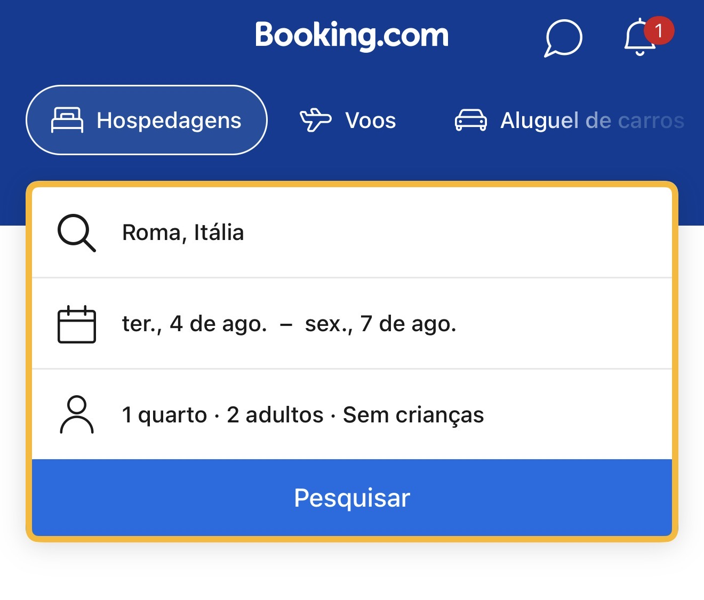
Também dá para ordenar por preço, avaliação ou custo-benefício, e visualizar no mapa para conferir proximidade com metrô e regiões estratégicas.
Em "Selecionar quartos", verifique: tipo de acomodação sugerido no roteiro, inclusão de café da manhã, cancelamento gratuito, valor total com taxas e política de pagamento.
Insira o cartão de crédito para garantir. Na maioria das opções com cancelamento gratuito não há cobrança imediata — o cartão funciona como garantia. Vocês receberão confirmação por e-mail e tudo fica centralizado na conta do Booking. Em caso de dúvida antes de confirmar, enviem o link ou print no grupo para validarmos juntos.
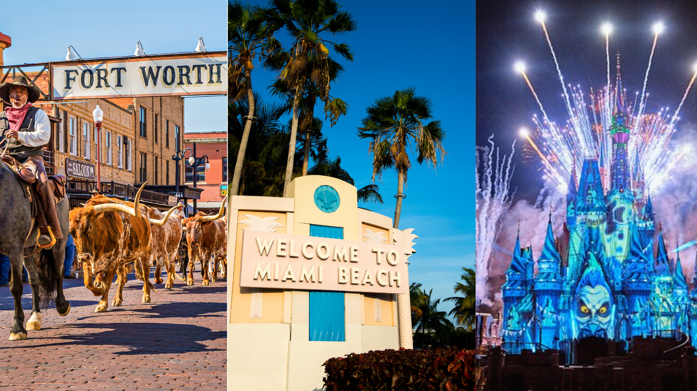
Estados Unidos
VAMOS CARIMBAR OS ESTADOS UNIDOS 🇺🇸
Maressa e Guilherme, os Estados Unidos não são um país só. São 50 estados, cada um com leis, clima, cultura e identidade próprios, espalhados por um território maior que toda a Europa Ocidental. É o sonho texano com chapéu de cowboy e BBQ defumado por 14 horas em Dallas. É o azul turquesa do mar com prédios art déco cor pastel em Miami. É a magia dos parques que transformam adulto em criança em Orlando. Vocês escolheram três Américas muito diferentes, e essa é justamente a graça de começar por aqui.
Vocês escolheram um destino ideal pra estrear: estrutura impecável, tudo sinalizado, logística facílima. O único "choque cultural" real é o tamanho — porções gigantes, distâncias enormes, prédios altíssimos. Abraçem isso. É parte da experiência americana.
Outubro/novembro nos EUA é transição. Dallas fica no esquema layered (camadas): dias mornos de 22-25°C, mas noites podem baixar pra 10-12°C — casaco obrigatório. Miami continua verão-eterno: 25-28°C, água morna, ainda dá pra tomar banho de mar. Orlando é quente de dia (26-28°C) com pancadas rápidas de chuva — levar poncho dobrável ou capa.
Frases essenciais em inglês americano — simples, educadas, funcionais. Em Miami, muitas delas também funcionam em espanhol; em Dallas e Orlando, inglês é indispensável.
Americano fala mais rápido e "engole" sílabas. Se não entenderem, sorriam e digam "Can you repeat, please?" — ninguém vai julgar. Eles amam quando estrangeiros tentam, mesmo com sotaque forte.
O que esperar
Porções generosas — pra dois, quase sempre dá pra dividir um prato. Muita variedade: do burger simples ao fine dining, passando por food trucks, diners retrô, BBQ texano, cozinha cubana e japonesa. Cada cidade tem seu DNA: Dallas é Tex-Mex e carne; Miami é cubano, peruano e seafood; Orlando é mais turístico, mas tem jóias escondidas.
Bebidas típicas
Sweet tea (chá gelado adoçado, típico do sul), margarita (drink texano por excelência), craft beer (cervejas artesanais), mojito e daiquiri em Miami, milkshake, refrigerante com refil grátis em quase todo lugar. Café americano costuma ser mais fraco que o brasileiro — peçam espresso ou latte se quiserem sabor forte.
Dicas gerais
O cardápio sempre tem foto ou descrição detalhada. Happy hour é sagrado (geralmente 16h-19h com desconto em drinks). Brunch no fim de semana é quase obrigatório. Muitos restaurantes aceitam reserva pelo OpenTable — vale baixar o app. Em bares movimentados, cartão e ID (passaporte) na mão.
Etiqueta americana
Gorjeta 18-20% é obrigatória. O garçom vai perguntar "How is everything?" algumas vezes — é cultura. A conta (check) não vem sozinha, vocês pedem. Tap water é de graça. Não é comum dividir pratos grandes (mas dá). Proibido fumar em bares e restaurantes fechados em quase todo estado.
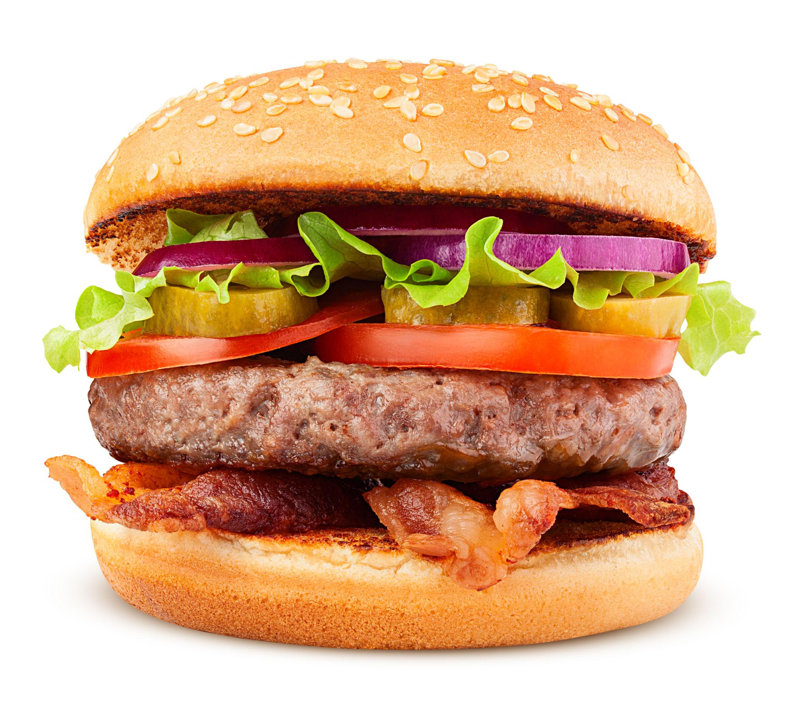
American Burger Pão brioche, carne suculenta, queijo derretido, molho especial. Cada estado tem seu jeito — em Dallas, geralmente com bacon.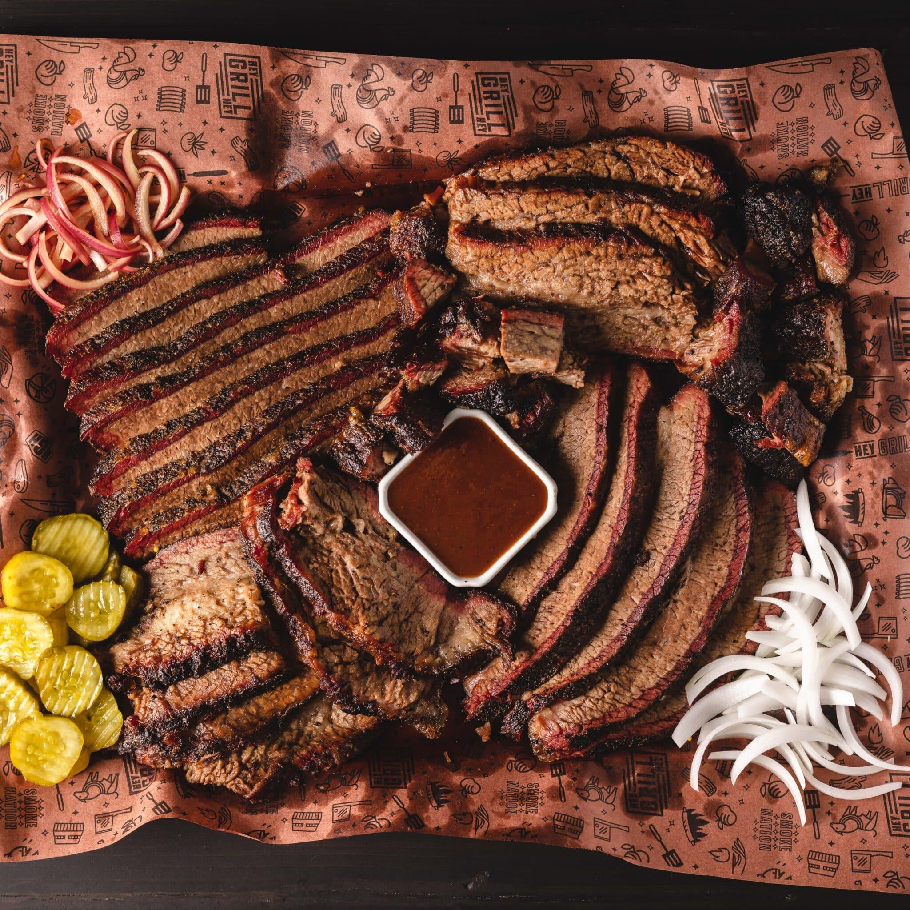
BBQ Texano Brisket (peito bovino) defumado por 12-14h, costelinhas, linguiça e pão branco. Prato obrigatório em Dallas.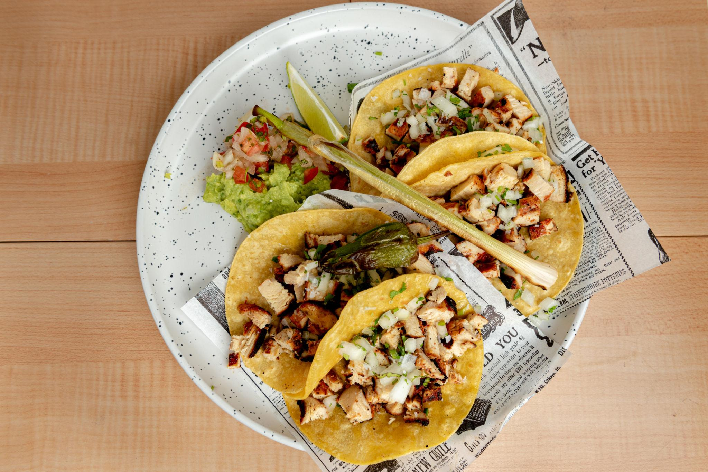
Tex-Mex Fajitas, tacos, enchiladas, nachos — a fusão texano-mexicana que virou sinônimo de Dallas. Servido com margarita.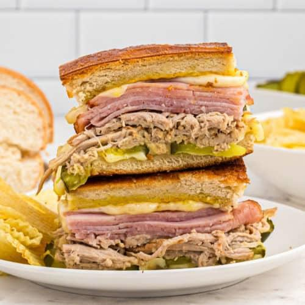
Cuban Sandwich Pão cubano crocante, porco desfiado, presunto, queijo suíço, picles e mostarda. Alma da Little Havana em Miami.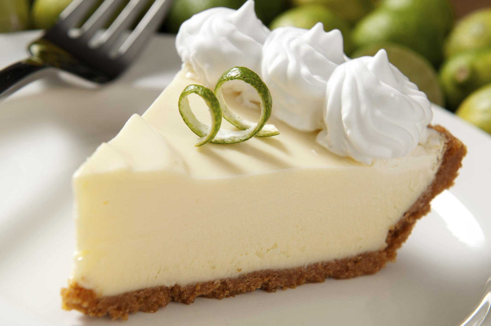
Key Lime Pie Torta cítrica típica da Flórida feita com limão-galego das Keys. Sobremesa obrigatória em Miami. NY Cheesecake
Denso, cremoso, base de biscoito. Icônico americano — servido do coffee shop ao fine dining.
NY Cheesecake
Denso, cremoso, base de biscoito. Icônico americano — servido do coffee shop ao fine dining.
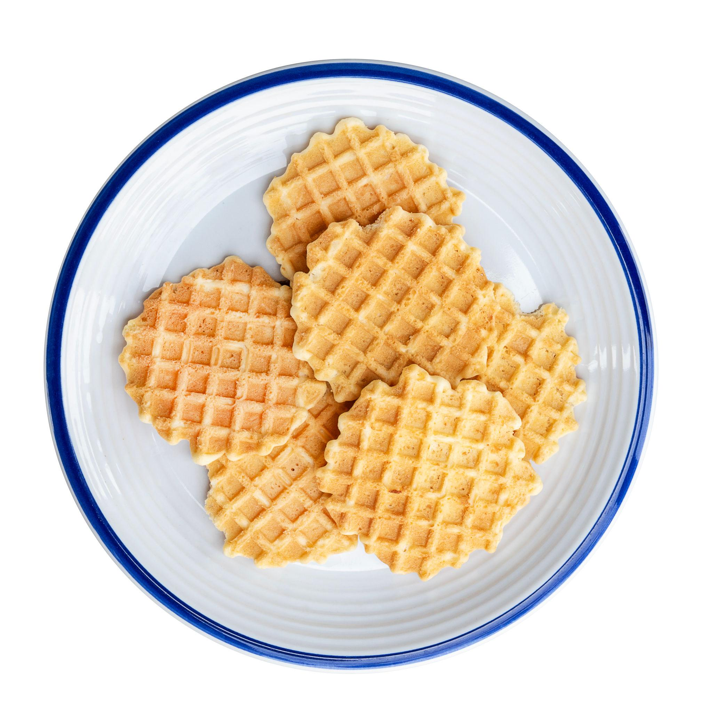
Pancakes & Waffles Café da manhã americano clássico: pilha de pancakes com manteiga, maple syrup e bacon. IHOP e Denny's são os templos.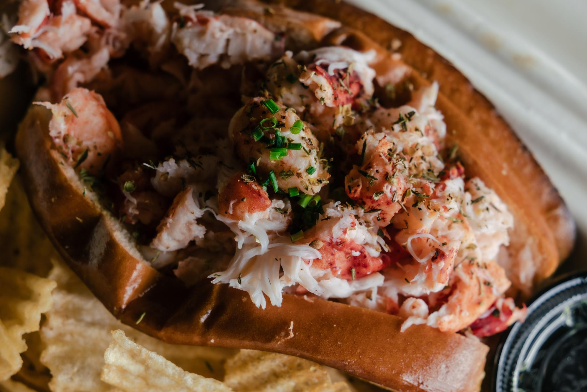
Seafood & Stone Crab Miami é paraíso de frutos do mar — stone crab é especialidade local (temporada começa em outubro), além de ceviches peruanos.Em Dallas, peçam frozen margarita — a Mariano's inventou a máquina em 1971. Em Miami, mojito autêntico na Little Havana ou Espresso Martini nos rooftops. Em Orlando, os bares temáticos do Universal e do Disney Springs valem pela experiência mais que pelo drink.
Tudo que vocês precisam pra usar este roteiro com confiança e autonomia. Vão aparecer muito nos dias detalhados da Etapa 4.
Este roteiro foi pensado para otimizar deslocamentos, horários e ritmo, garantindo a melhor experiência dentro do tempo disponível. Mas viagem não é um roteiro engessado — é experiência viva. Ajustem o que fizer sentido, prolonguem o que encantar e adaptem o dia conforme a energia de vocês.

Nós temos uma filosofia de vida: "Pelo menos uma vez ao ano conhecer um lugar que nunca fomos antes"
E o conhecimento nos proporciona viver isso.